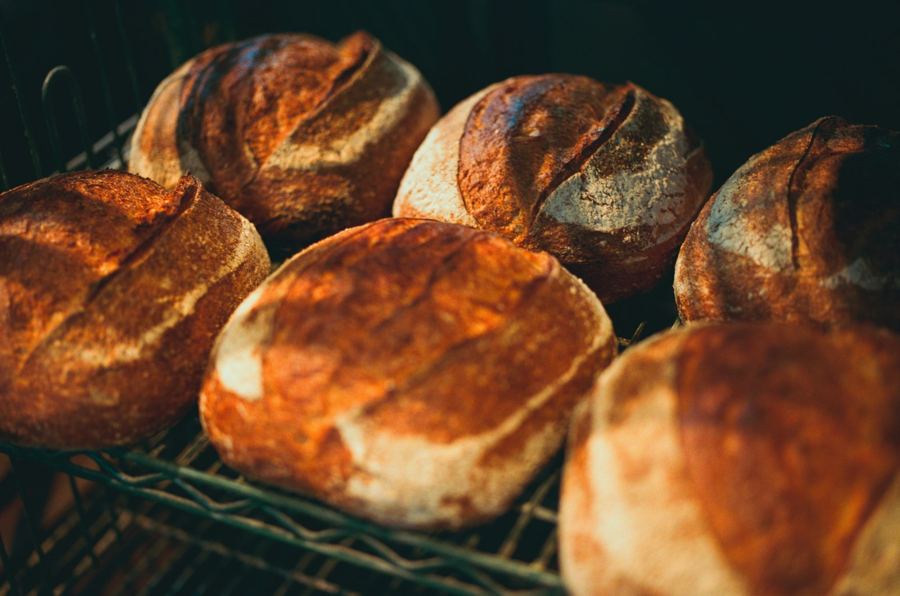

House sourdough
A crackly crust, an open crumb, a little tang.
YOUR NEIGHBORHOOD MORNING RITUAL
Slow-fermented sourdough. Coffee worth sitting down for. A little sweetness, just because.
Small batches. Warm welcomes. Tue–Sun from 7am.

A SLOWER KIND OF GOOD
Our mornings begin the day before. Flour, water, salt and a lively starter take their time becoming something worth gathering around.
We’re a neighborhood bakery with a simple idea: make the everyday loaf feel a little extraordinary. Good ingredients, patient hands, and always room for one more at the counter.
A little more about us ↗THIS WEEK’S LITTLE JOYS
Something seasonal. Something sweet. Something to bring to a friend.
Explore the seasonal collection ↗One house loaf, two honey buns and honey butter. A leisurely breakfast for two, or a very good gift.
$18 per sample box
Meet the weekend box ↗FROM THE COFFEE COUNTER
Espresso, steamed milk and a golden spoonful of honey. Yours, hot or iced.
$5.50Find your usual →PULL UP A CHAIR
Maplewood · Fictional neighborhood address
Bread comes out at 7am. Best selection before 10.